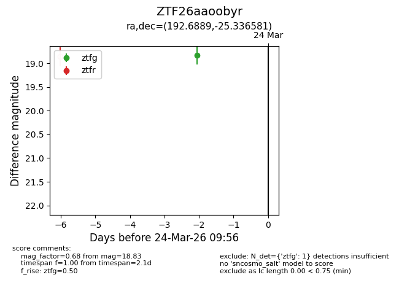
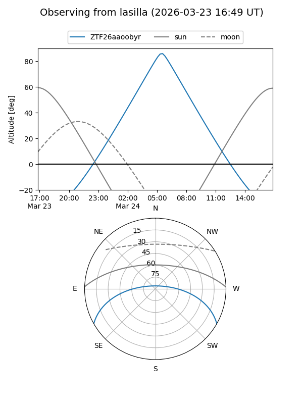
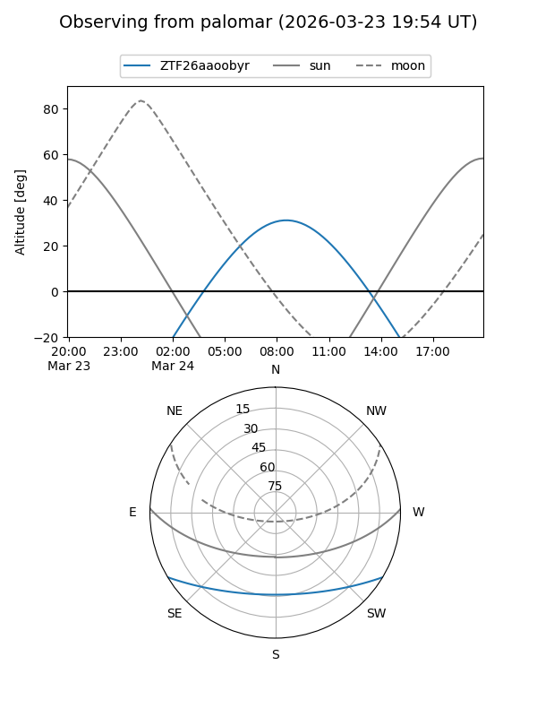

ZTF26aaoobyr
Target ZTF26aaoobyr at 2026-03-24 09:58
Aliases and brokers:
FINK: link
Lasair: link
ALeRCE: link
alt names
ZTF26aaoobyr (ztf,fink_ztf)
Coordinates:
equatorial (ra, dec) = 192.6889,-25.33658
equatorial (HMS+DMS) = 12:50:45.35,-25:20:11.69
galactic (l, b) = (302.7376,+37.53491)
Flags:
Photometry:
last ztfg=18.83
1 ztfg detections
Lightcurve

Visibility


Additional plots